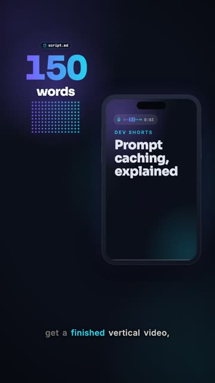
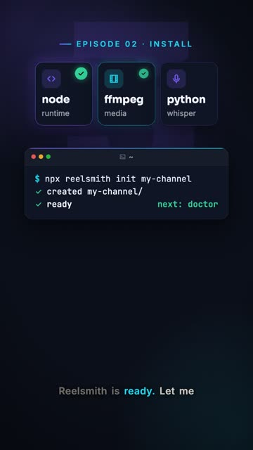
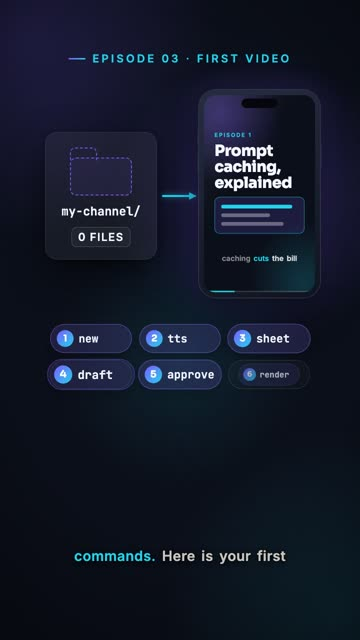
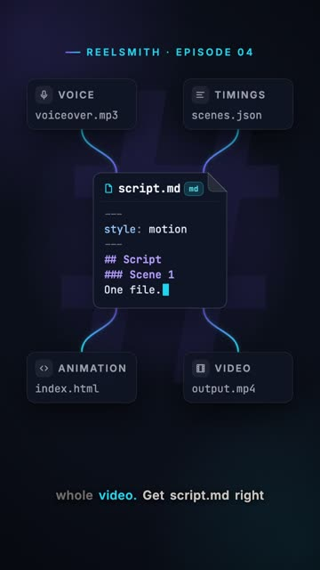
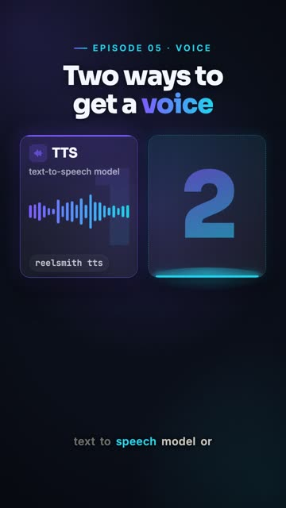
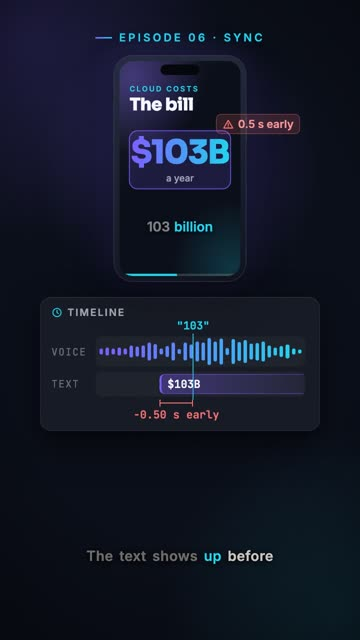
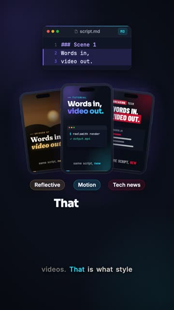
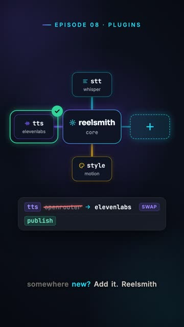
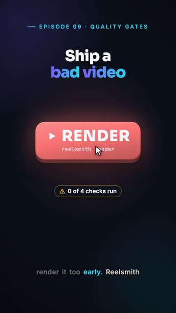
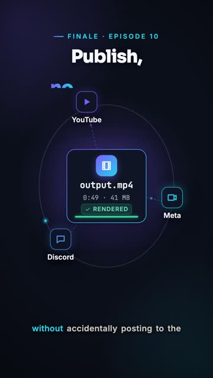

Word-synced subtitles
One SubtitleRail per scene highlights every word on Whisper's timestamps. Overlays appear exactly when their word is spoken.
Open source · MIT
A plugin-based framework for agent-made short videos.
Write 150 words of markdown. Your coding agent turns them into a finished vertical video: a voice, subtitles synced to every word, motion graphics, and an MP4 ready to post. Every step is a plain file, every provider is a plugin, and nothing renders or posts until you approve it.
How it works
A markdown script: scenes, one sentence per line, a line of scene hints each. You write it, or your agent does.
videos/<name>/script.md
A TTS voice or your own take from the built-in teleprompter. Whisper gives every word a timestamp.
reelsmith tts
One HTML file, every overlay bound to the word that introduces it. Rendered in parallel browsers straight into ffmpeg.
reelsmith render
What you get
One SubtitleRail per scene highlights every word on Whisper's timestamps. Overlays appear exactly when their word is spoken.
Every frame is a pure function of time, so a render is repeatable and splits across parallel browsers.
TTS, STT, styles and publish targets share one registry. The built-ins are plugins too, so yours are first-class.
A STYLE.md and a component kit define the look. Reflective, tech-news and motion ship built in.
Record with the teleprompter and re-record single lines, or synthesize per line or in one performance call. Same output either way.
Linters, a contact sheet scored to 8+, a draft you watch, and an approval fingerprint. The final render refuses without it.
Skills, CLAUDE.md and markdown config tell a coding agent exactly how to drive the pipeline, and where to stop.
A markdown script, one HTML file, JSON contracts between steps. Everything diffs, reviews and versions in git.
Built for coding agents
Open a Reelsmith project in Claude Code and ask for a video. The shipped skills tell the agent how to research, write the script, voice it, build the animation, check its own frames, and publish. It stops for you at every gate.
reelsmith-pipelineresearchscript-writingteleprompter-preptake-reviewhtml-animationpublishmarket-researchPlugin kinds
tts
Text to audio.
tts-openrouter
stt
Audio to word timings.
stt-whisper
style
A visual look.
reflective · tech-news · motion
publish
Send the MP4 somewhere.
youtube · meta · discord
module.exports = { name: 'tts-elevenlabs', kind: 'tts', version: '1.0.0', async synthesize({ text, voice, model, format }) { // call the provider, return { audio: Buffer, format: 'mp3' } }, };
Tutorial series
From install to a published short, one command at a time. Tap one to watch it here. The player also links to its folder, with the script and the animation. The episode guide has what each one teaches and the commands it shows.

Script, voice, timings, animation, MP4: the whole pipeline.

Node, ffmpeg, Python, init, one key, and the doctor.

Six commands from a blank folder to output.mp4.

Frontmatter, scenes, cue lines and scene hints.

Sentence mode, performance mode, recording and the cut.

Word cues, pure-function frames, subtitles, linters.

Reflective, tech-news, motion, and your own brand.

Four plugin kinds and one small contract.

Lint, contact sheet, draft, approval, render.

publish.md, dry runs, YouTube, Meta and Discord.
Requirements
macOS or Linux. reelsmith doctor checks all of it and tells you what is missing.
$ npx github:Aabishkar2/reelsmith init my-channel $ cd my-channel $ npx reelsmith doctor
Once the package is on npm, npx reelsmith init my-channel does the same. From a clone: node bin/reelsmith.js init ../my-channel